n=2
n=3
n=4

n=5
We can illustrate this identity for a shape S by tiling a copy of S scaled by a factor of k with: n copies of S, (n-1) copies of S scaled by a factor of 2, ... up to 1 copy of S scaled by a factor of n. These are called anti-partridge tilings. Clearly the n=1 k=1 case is trivial. Anti-partridge tilings for n=6 of squares and equilateral triangles were found a decade ago. These can be stretched to yield anti-partridge tilings for n=6 of all parallelograms and triangles. What anti-partridge tilings can you find for n=6 or n=25?
Some rare shapes can have anti-partridge tilings for other values of n. There are apparently rectangle solutions for all values of n. Can you find some? There are also solutions for n=4 and n=10 using triangles. Can you find them? What other anti-partridge tilings can you find for non-integer values of k?
Patrick Hamlyn claimed to find all the solutions for the 30-60-90 triangle for n=6, but George Sicherman found many more.
Here are the known non-trivial anti-partridge tilings for n=6:
| 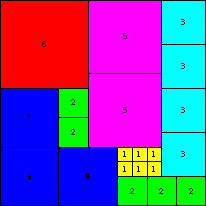 (Colin Singleton, 1996) | 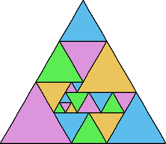 (Bob Wainwright, 2000) |
| 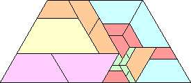 (Erich Friedman, 2002) | 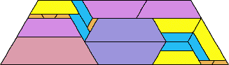 (Patrick Hamlyn, 2002) |
| 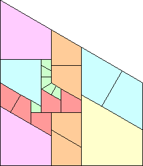 (Erich Friedman, 2002) | 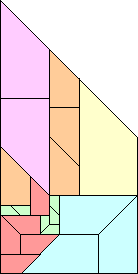 (Erich Friedman, 2002) | 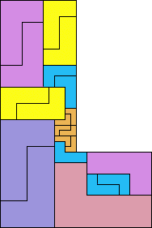 (Patrick Hamlyn, 2002) |
| 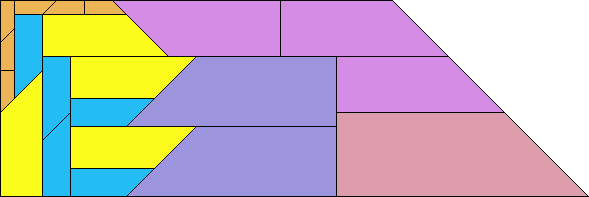 (Patrick Hamlyn) |
| 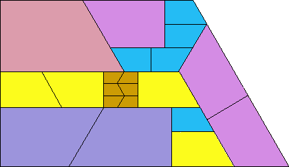 (Patrick Hamlyn) |
| 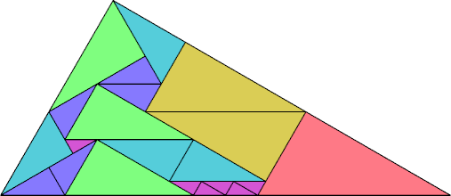 (George Sicherman) |
George Sicherman found many rectangles for other values of n.
Joe DeVincentis showed there are rectangle solutions for all n not equal to 1 mod 4 by stacking squares of size n+1-i above those of size i (like n=2 through 4 below).
Here are the known non-trivial anti-partridge tilings for other values of n:
| 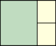 n=2 | 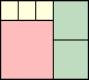 n=3 | 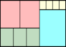 n=4 | n=5 |
| 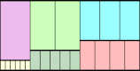 n=6 | 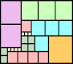 n=7 | 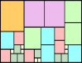 n=7 | 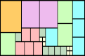 n=7 |
| 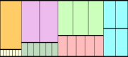 n=7 | 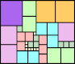 n=8 | 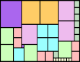 n=8 | 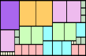 n=8 |
| 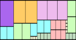 n=8 | 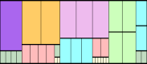 n=8 | 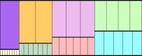 n=8 |
| 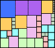 n=9 | 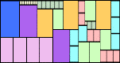 n=9 | 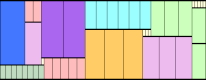 n=9 |
| 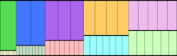 n=10 | 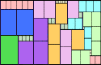 n=10 |
| 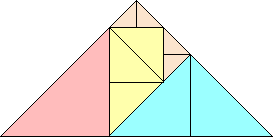 n=4 |
| 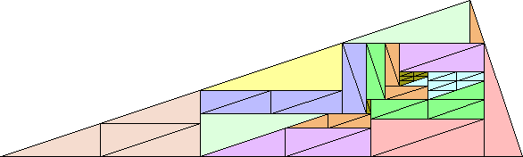 n=10 |
Patrick Hamlyn likes tiling things on other surfaces too. He found this anti-partridge tiling for the bent triomino on a Möbius strip:
Patrick Hamlyn also found anti-partridge-like tilings to illustrate the following identities:
Claudio Baiocchi found this anti-partridge-like tiling:
If you can extend any of these results, please e-mail me. Click here to go back to Math Magic. Last updated 7/2/07.